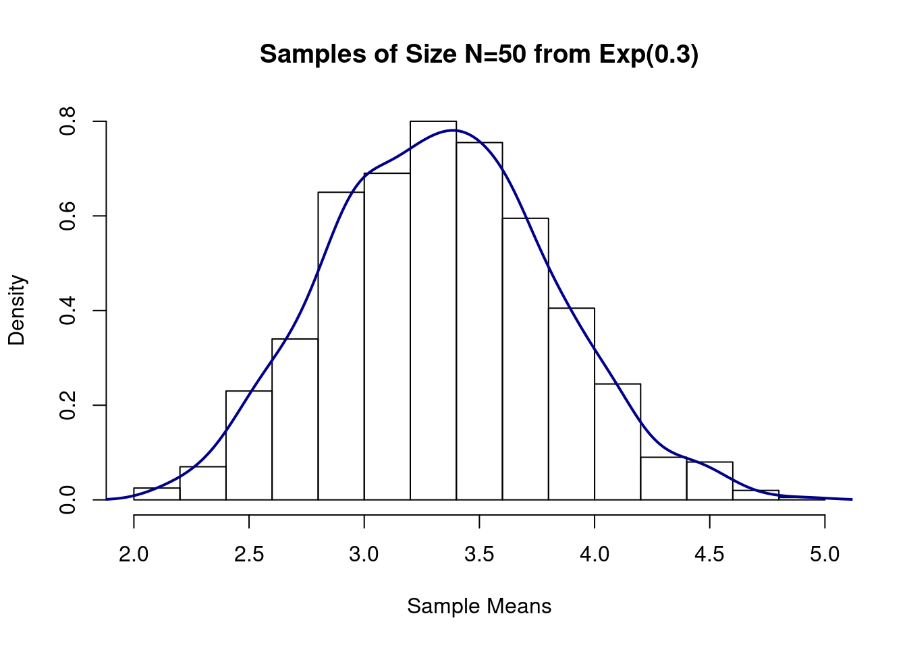
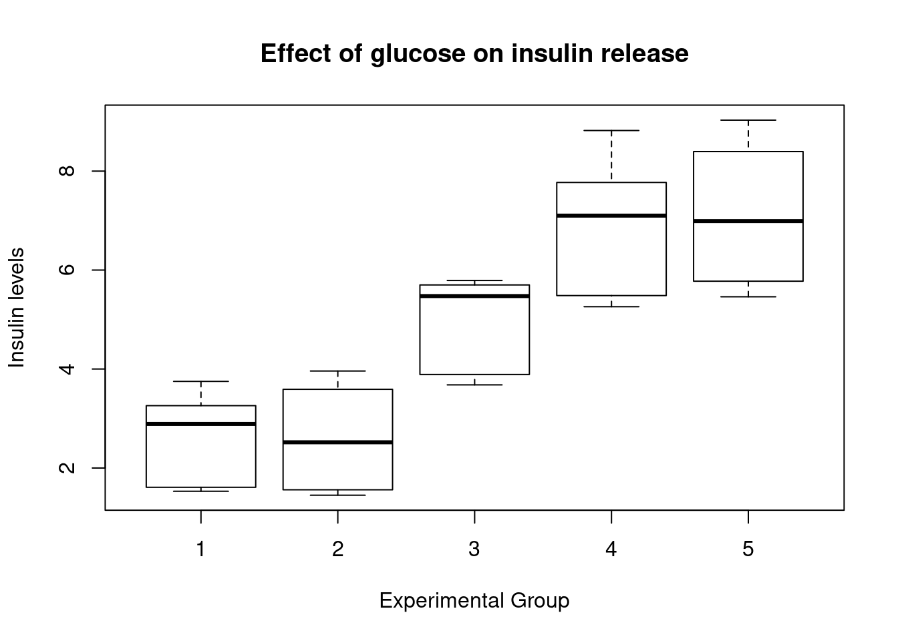
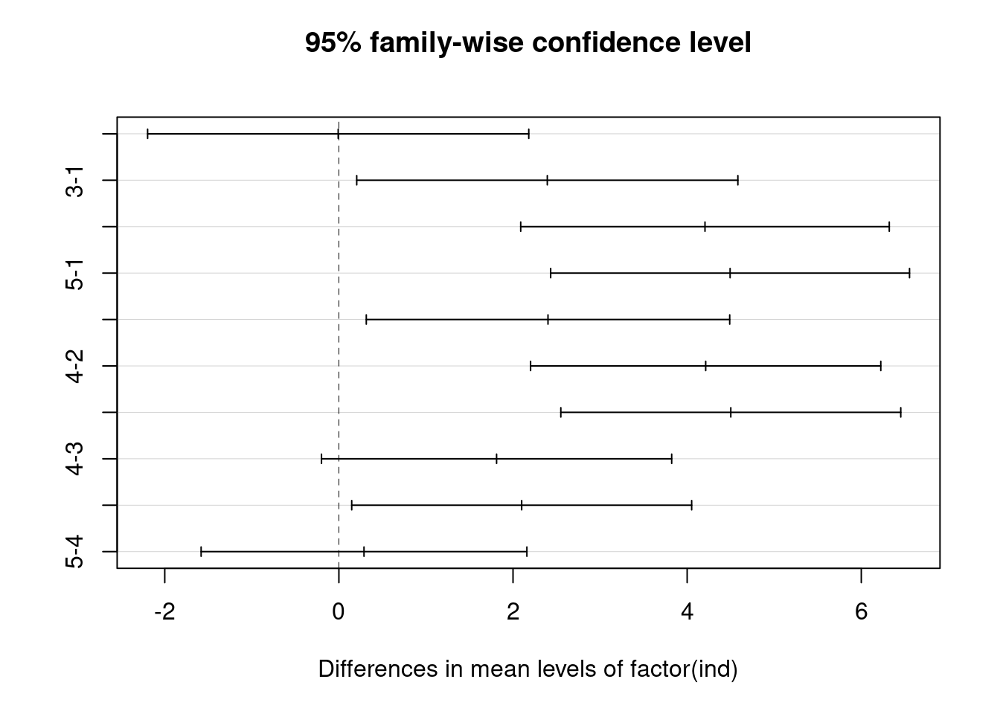

R Code for hypothesis testing
Jeffrey Liang
10/29/2020
Distribution
Binomial
\(P(\mathcal{X}=k)\ = {n \choose k}p^k(1-p)^{n-k}\)
$P(\mathcal{X}=k)\ = {n \choose k}p^k(1-p)^{n-k}$Normal Distribution
\(P(\mathcal{X}=k)\ = \frac{1}{\sqrt{2\pi}\sigma}*e^{-\frac{(x-\mu)^2}{2\sigma^2}}\)
$P(\mathcal{X}=k)\ = \frac{1}{\sqrt{2\pi}\sigma}*e^{-\frac{(x-\mu)^2}{2\sigma^2}}$One Group t-test
left tailed
\(H_0\): there’s no difference betwee sample mean and the true mean
\(H_1\): the sample mean is lower than the true mean
\(\bar{x} = \frac{\sum_{i=1}^n{x_i}}{n}\)
\(s_d = \sqrt{\sum_{i=1}^n{(x_i - \bar{x})^2}/(n-1)}\)
\(t = \frac{\bar{x} - 0}{s_d/\sqrt{n}}\)
\(Reject ~ H_0 ~ if ~ t<t_{n-1,\alpha}\)
\(Fail ~ reject ~ H_0 ~ if ~ t>t_{n-1,\alpha}\)
\(CI : (-\infty,\bar{x} - t_{df,\alpha}*sd/\sqrt{n})\)
$H_0$: there's no difference betwee sample mean and the true mean
$H_1$: the sample mean is lower than the true mean
$\bar{x} = \frac{\sum_{i=1}^n{x_i}}{n}$
$s_d = \sqrt{\sum_{i=1}^n{(x_i - \bar{x})^2}/(n-1)}$
$t = \frac{\bar{x} - 0}{s_d/\sqrt{n}}$
$Reject ~ H_0 ~ if ~ t<t_{n-1,\alpha}$
$Fail ~ reject ~ H_0 ~ if ~ t>t_{n-1,\alpha}$
$CI : (-\infty,\bar{x} - t_{df,\alpha}*sd/\sqrt{n})$right tailed
\(H_0\): there’s no difference betwee sample mean and the true mean
\(H_1\): the sample mean is greater than the true mean
\(\bar{x} = \frac{\sum_{i=1}^n{x_i}}{n}\)
\(s_d = \sqrt{\sum_{i=1}^n{(x_i - \bar{x})^2}/(n-1)}\)
\(t = \frac{\bar{x} - 0}{s_d/\sqrt{n}}\)
\(Reject ~ H_0 ~ if ~ t>t_{n-1,1-\alpha}\)
\(Fail ~ reject ~ H_0 ~ if ~ t<t_{n-1,1-\alpha}\)
\(CI : (\bar{x} + t_{df,1-\alpha}*sd/\sqrt{n},\infty)\)
$H_0$: there's no difference betwee sample mean and the true mean
$H_1$: the sample mean is greater than the true mean
$\bar{x} = \frac{\sum_{i=1}^n{x_i}}{n}$
$s_d = \sqrt{\sum_{i=1}^n{(x_i - \bar{x})^2}/(n-1)}$
$t = \frac{\bar{x} - 0}{s_d/\sqrt{n}}$
$Reject ~ H_0 ~ if ~ t>t_{n-1,1-\alpha}$
$Fail ~ reject ~ H_0 ~ if ~ t<t_{n-1,1-\alpha}$
$CI : (\bar{x} + t_{df,1-\alpha}*sd/\sqrt{n},\infty)$two-side
\(H_0\): there’s no difference betwee sample mean and the true mean
\(H_1\): the sample mean is different from the true mean
\(\bar{x} = \frac{\sum_{i=1}^n{x_i}}{n}\)
\(s_d = \sqrt{\sum_{i=1}^n{(x_i - \bar{x})^2}/(n-1)}\)
\(t = \frac{\bar{x} - 0}{s_d/\sqrt{n}}\)
\(Reject ~ H_0 ~ if ~ |t|<t_{n-1,1-\alpha/2}\)
\(Fail ~ reject ~ H_0 ~ if ~ |t|<t_{n-1,1 - \alpha/2}\)
\(CI : (\bar{x} - t_{df,1-\alpha/2}*sd/\sqrt{n} ,\bar{x} + t_{df,1-\alpha/2}*sd/\sqrt{n})\)
$H_0$: there's no difference betwee sample mean and the true mean
$H_1$: the sample mean is different from the true mean
$\bar{x} = \frac{\sum_{i=1}^n{x_i}}{n}$
$s_d = \sqrt{\sum_{i=1}^n{(x_i - \bar{x})^2}/(n-1)}$
$t = \frac{\bar{x} - 0}{s_d/\sqrt{n}}$
$Reject ~ H_0 ~ if ~ |t|<t_{n-1,1-\alpha/2}$
$Fail ~ reject ~ H_0 ~ if ~ |t|<t_{n-1,1 - \alpha/2}$
$CI : (\bar{x} - t_{df,1-\alpha/2}*sd/\sqrt{n} ,\bar{x} + t_{df,1-\alpha/2}*sd/\sqrt{n})$paired
\(H_0\): there’s no difference betwee difference
\(H_1\): the difference is different
\(\bar{d} = \frac{\sum_{i=1}^n{d_i}}{n}\)
\(s_d = \sqrt{\sum_{i=1}^n{(d_i - \bar{d})^2}/(n-1)}\)
\(t = \frac{\bar{d} - 0}{s_d/\sqrt{n}}\)
\(Reject ~ H_0 ~ if ~ |t|<t_{n-1,1-\alpha/2}\)
\(Fail ~ reject ~ H_0 ~ if ~ |t|<t_{n-1,1 - \alpha/2}\)
\(CI : (\bar{d} - t_{df,1-\alpha/2}*sd/\sqrt{n} ,\bar{d} + t_{df,1-\alpha/2}*sd/\sqrt{n})\)
$H_0$: there's no difference betwee difference
$H_1$: the difference is different
$\bar{d} = \frac{\sum_{i=1}^n{d_i}}{n}$
$s_d = \sqrt{\sum_{i=1}^n{(d_i - \bar{d})^2}/(n-1)}$
$t = \frac{\bar{d} - 0}{s_d/\sqrt{n}}$
$Reject ~ H_0 ~ if ~ |t|<t_{n-1,1-\alpha/2}$
$Fail ~ reject ~ H_0 ~ if ~ |t|<t_{n-1,1 - \alpha/2}$
$CI : (\bar{x} - t_{df,1-\alpha/2}*sd/\sqrt{n} ,\bar{d} + t_{df,1-\alpha/2}*sd/\sqrt{n})$R Code
################################################################
# Biostatistical Methods I #
# Statistical Inference: One-Sample Mean #
# Author: Cody Chiuzan #
################################################################
############################################################
# Sample mean distributions: CLT #
############################################################
# Draw 1000 samples of size 10 from an underlying exponential distribution with parameter lambda=0.3
# Calculate their means/var and draw a histogram to vizualize the sample means distribution
set.seed(2)
sample_means_exp1 = rep(NA, 1000)
for(i in 1:1000){
sample_means_exp1[i] = mean(rexp(10,0.3))
}
# sample_means_exp
# Calculate the means and the variances of all samples
mean(sample_means_exp1) # compare to true Mean = 1/lambda## [1] 3.360129var(sample_means_exp1) # compare to true Var=1/lambda^2## [1] 1.261384#Histogram
hist(sample_means_exp1, main = "Samples of Size N=10 from Exp(0.3)", xlab = "Sample Means", prob = T)
lines(density(sample_means_exp1), col = "darkblue", lwd = 2)
# Draw 1000 samples of size 50 from an underlying exponential distribution with parameter lambda=0.3
# Calculate their means/var and draw a histogram to vizualize the sample means distribution
set.seed(2)
sample_means_exp2 = rep(NA, 1000)
for(i in 1:1000){
sample_means_exp2[i] = mean(rexp(50,0.3))
}
# Calculate the means and the variances of all samples
mean(sample_means_exp2) # compare to true Mean = 1/lambda## [1] 3.330665var(sample_means_exp2) # compare to true Var=1/lambda^2## [1] 0.2316242#Histogram
hist(sample_means_exp2, main = "Samples of Size N=50 from Exp(0.3)", xlab = "Sample Means", prob = T)
lines(density(sample_means_exp2), col = "darkblue", lwd = 2)
# Construct a 95% CI for the population mean with n=10, X_bar=175, and known sigma=15
# Sigma represents the pooulation standard deviation
# 1-(alpha/2)=1-(0.05/2)=0.975
LCLz95<-175 - qnorm(0.975) * 15/sqrt(10)
UCLz95<-175 + qnorm(0.975) * 15/sqrt(10)
CLz95<-c(LCLz95, UCLz95)
CLz95## [1] 165.7031 184.2969# What if we want a 99% CI?
LCLz99<-175-qnorm(0.995)* 15/sqrt(10)
UCLz99<-175 + qnorm(0.995) * 15/sqrt(10)
CLz99<-c(LCLz99, UCLz99)
CLz99## [1] 162.7818 187.2182# Construct a 95% CI for the population mean with n=10 => df=10-1=9, X_bar=175, and known s=15
# s represents the sample standard deviation
LCLt95<-175 - qt(0.975, df=9) * 15/sqrt(10)
UCLt95<-175 + qt(0.975, df=9) * 15/sqrt(10)
CLt95<-c(LCLt95, UCLt95)
CLt95## [1] 164.2696 185.7304# Construct a 95% CI for the population variance with known s=15
# s represents the sample standard deviation
LCL_var95 <- 9*(15^2)/qchisq(0.975, 9)
UCL_var95 <- 9*(15^2)/qchisq(0.025, 9)
CL_var95<-c(LCL_var95, UCL_var95)
CL_var95## [1] 106.4514 749.8918# Hypothesis Test: Infarct size example
# Test if the mean infract size is different from 25
# X_bar=16, s=10, N=40
t_stats<-(16-25)/(10/sqrt(40))
t_stats## [1] -5.6921# Compare the test statistics with the critical value, alpha=0.05
qt(0.975,39) # 2.02## [1] 2.022691# Compute the p-value: t_stats<0, so the p-value is twice area to the left of a t distr. with 39 df
p.val<-2*pt(t_stats,39) # p.val<.0001, reject H0.
# Remember the low_birth data
low_birth_all <- read.csv(here::here("R_Code/R - Module 2/lowbwt_ALL.csv"))
# Let's test if the true mean is different than 3000g
# One-sample t-test, two-tailed
t.test(low_birth_all$bwt, alternative='two.sided', mu=3000)##
## One Sample t-test
##
## data: low_birth_all$bwt
## t = -1.0437, df = 188, p-value = 0.298
## alternative hypothesis: true mean is not equal to 3000
## 95 percent confidence interval:
## 2840.049 3049.264
## sample estimates:
## mean of x
## 2944.656# Output from R
# One Sample t-test
# t = -1.0437, df = 188, p-value = 0.298 ----> Fail to reject H0.
# alternative hypothesis: true mean is not equal to 3000
# 95 percent confidence interval: 2840.049 3049.264
# sample estimates: mean of x is 2944.656
# Let's test if the true mean is less than 3000g
# One-sample t-test, one-tailed
t.test(low_birth_all$bwt, alternative='less', mu=3000)##
## One Sample t-test
##
## data: low_birth_all$bwt
## t = -1.0437, df = 188, p-value = 0.149
## alternative hypothesis: true mean is less than 3000
## 95 percent confidence interval:
## -Inf 3032.312
## sample estimates:
## mean of x
## 2944.656# Output from R
# t = -1.0437, df = 188, p-value = 0.149 ----> Fail to reject H0.
# alternative hypothesis: true mean is less than 3000
# 95 percent confidence interval: -Inf 3032.312 (One-sided confidence interval)
# sample estimates: mean of x is 2944.656 Two Group testing
variance test
\(H_0\): the variances between group are the equal(no difference)
\(H_1\): the variances between group are not the equal(there’s difference)
\(s_{x_1} = \sqrt{\sum_{i=1}^{n_1}(x_i - \bar{x_1})^2/(n_1-1)}\)
\(s_{x_2} = \sqrt{\sum_{j=1}^{n_2}(x_i - \bar{x_2})^2/(n_2-1)}\)
\(F = s_1^2/s_2^2 \sim F_{n_1-1,n_2-1}\)
\(Reject ~ H_0 ~ if ~ F>F_{n_1-1,n_2-1,1-\alpha/2} ~ OR ~ F<F_{n_1-1,n_2-1,\alpha/2}\)
\(Fail ~ reject ~ H_0 ~ if ~ F_{n_1-1,n_2-1,\alpha/2}<F<F_{n_1-1,n_2-1,1-\alpha/2}\)
$H_0$: the variances between group are the equal(no difference)
$H_1$: the variances between group are not the equal(there's difference)
$s_{x_1} = \sqrt{\sum_{i=1}^{n_1}(x_i - \bar{x_1})^2/(n_1-1)}$
$s_{x_2} = \sqrt{\sum_{j=1}^{n_2}(x_i - \bar{x_2})^2/(n_2-1)}$
$F = s_1^2/s_2^2 \sim F_{n_1-1,n_2-1}$
$Reject ~ H_0 ~ if ~ F>F_{n_1-1,n_2-1,1-\alpha/2} ~ OR ~ F<F_{n_1-1,n_2-1,\alpha/2}$
$Fail ~ reject ~ H_0 ~ if ~ F_{n_1-1,n_2-1,\alpha/2}<F<F_{n_1-1,n_2-1,1-\alpha/2}$t-test with equal variance
\(H_0\): the means between group are the equal(no difference)
\(H_1\): the means between group are not the equal(there’s difference)
\(s_{pool} = \frac{(n_1-1)s_1 + (n_2 -1)s_2}{n_1+n_2-2}\)
\(t = \frac{\bar{X_1} - \bar{x_2}}{s_{pool}\times\sqrt{\frac{1}{n_1}+\frac{1}{n_2}}}\)
\(Reject ~ H_0 ~ if ~ |t|>t_{df,1-\alpha/2}\)
\(Fail ~ reject ~ H_0 ~ if ~ |t|<t_{df,1-\alpha/2}\)
\(CI = (\bar{X_1}-\bar{x_2} ~ - ~ t_{df,1-\alpha/2}s_{pool}/\sqrt{1/n_1+1/n_2},\bar{X_1}-\bar{x_2} ~ + ~ t_{df,1-\alpha/2}s_{pool}/\sqrt{1/n_1+1/n_2} )\)
$H_0$: the means between group are the equal(no difference)
$H_1$: the means between group are not the equal(there's difference)
$s_{pool} = \frac{(n_1-1)s_1 + (n_2 -1)s_2}{n_1+n_2-2}$
$t = \frac{\bar{X_1} - \bar{x_2}}{s_{pool}\times\sqrt{\frac{1}{n_1}+\frac{1}{n_2}}}$
$Reject ~ H_0 ~ if ~ |t|>t_{df,1-\alpha/2}$
$Fail ~ reject ~ H_0 ~ if ~ |t|<t_{df,1-\alpha/2}$
$CI = (\bar{X_1}-\bar{x_2} ~ - ~ t_{df,1-\alpha/2}s_{pool}/\sqrt{1/n_1+1/n_2},\bar{X_1}-\bar{x_2} ~ + ~ t_{df,1-\alpha/2}s_{pool}/\sqrt{1/n_1+1/n_2} )$t-test with unequal variance
\(H_0\): the means between group are the equal(no difference)
\(H_1\): the means between group are not the equal(there’s difference)
\(\bar{X_1} - \bar{X_2} \sim N(\mu_1-\mu_2,\frac{\sigma_1^2}{n_1}+\frac{\sigma_2^2}{n_2})\) if we know the population variance
\(t = \frac{\bar{X_1} - \bar{x_2}}{\sqrt{\frac{s_1^2}{n_1}+\frac{s_2^2}{n_2}}}~\sim t_{d''}\)
\(d' = round(d'') = \frac{(\frac{s_1^2}{n_1}+\frac{s_2^2}{n_2})^2}{\frac{s_1^2}{n_1}^2/(n_1-1)+\frac{s_2^2}{n_2}^2/(n_2-1)}\)
\(Reject ~ H_0 ~ if ~ |t|>t_{df,1-\alpha/2}\)
\(Fail ~ reject ~ H_0 ~ if ~ |t|<t_{df,1-\alpha/2}\)
\(CI = (\bar{X_1}-\bar{X_2} ~ - ~ t_{df,1-\alpha/2}\sqrt{\frac{s_1^2}{n_1}+\frac{s_2^2}{n_2}},\bar{X_1}-\bar{X_2} ~ + ~ t_{df,1-\alpha/2}\sqrt{\frac{s_1^2}{n_1}+\frac{s_2^2}{n_2}})\)
$H_0$: the means between group are the equal(no difference)
$H_1$: the means between group are not the equal(there's difference)
$\bar{X_1} - \bar{X_2} \sim N(\mu_1-\mu_2,\frac{\sigma_1^2}{n_1}+\frac{\sigma_2^2}{n_2})$ if we know the population variance
$t = \frac{\bar{X_1} - \bar{x_2}}{\sqrt{\frac{s_1^2}{n_1}+\frac{s_2^2}{n_2}}}~\sim t_{d''}$
$d' = round(d'') = \frac{(\frac{s_1^2}{n_1}+\frac{s_2^2}{n_2})^2}{\frac{s_1^2}{n_1}^2/(n_1-1)+\frac{s_2^2}{n_2}^2/(n_2-1)}$
$Reject ~ H_0 ~ if ~ |t|>t_{df,1-\alpha/2}$
$Fail ~ reject ~ H_0 ~ if ~ |t|<t_{df,1-\alpha/2}$
$CI = (\bar{X_1}-\bar{X_2} ~ - ~ t_{df,1-\alpha/2}\sqrt{\frac{s_1^2}{n_1}+\frac{s_2^2}{n_2}},\bar{X_1}-\bar{X_2} ~ + ~ t_{df,1-\alpha/2}\sqrt{\frac{s_1^2}{n_1}+\frac{s_2^2}{n_2}})$R Code
################################################################
# Biostatistical Methods I #
# Statistical Inference: Two-Sample Means #
# Author: Cody Chiuzan; Date: Sept 23, 2019 #
################################################################
###########################################################################
# Conduct a two-sample paired t-test to assess the effect of a new diet #
###########################################################################
weight_before<-c(201,231,221,260,228,237,326,235,240,267,284,201)
weight_after<-c(200,236,216,233,224,216,296,195,207,247,210,209)
weight_diff<-weight_after-weight_before
sd_diff<-sd(weight_diff)
test_weight<-mean(weight_diff)/(sd_diff/sqrt(length(weight_diff)))
# Use the t.test() built-in function
# What alternative are you testing?
t.test(weight_after, weight_before, paired=T, alternative="less")##
## Paired t-test
##
## data: weight_after and weight_before
## t = -3.0201, df = 11, p-value = 0.005827
## alternative hypothesis: true difference in means is less than 0
## 95 percent confidence interval:
## -Inf -8.174729
## sample estimates:
## mean of the differences
## -20.16667# R output
# data: weight_after and weight_before
# t = -3.0201, df = 11, p-value = 0.005827
# alternative hypothesis: true difference in means is less than 0
# 95 percent confidence interval: -Inf -8.174729
# sample estimates: mean of the differences -20.16667
# Reject the null and conclude that the mean LDL levels are significantly lower after the diet.
###########################################################################################################
# Conduct a two-sample independent t-test to assess the differences in BMD b/w the OC and non-OC groups #
###########################################################################################################
# Oral contraceptive example
# Testing equality of variances for two independent samples
# drawn from two underlying normal distributions.
# Sample 1: s1=0.16, n1=10, x1_bar=1.08
# Sample 2: s2=0.14, n2=10, x2_bar=1.00
F_test<-0.16^2/0.14^2
F_crit<-qf(.975, df1=9, df2=9)
# Compare the F statistic (F_test) to the critical value
# Fcrit: F with 9 dfs in numerator and 9 dfs in denominator
# Because F_test < F_crit, we fail to reject and conclude
# that the pop. variances are not significantly different.
# Use two-sample t-test with equal variances.
std_pooled<-sqrt(((0.16^2*9)+(0.14^2*9))/18)
t_stats<-(1.08-1.00)/(std_pooled*sqrt((1/10)+(1/10)))
# Compare t_stats to the critical value: t with 18 df
qt(0.975,18) # 2.10## [1] 2.100922# t-stats=1.19 < 2.10, fail to reject the null and conclude that
# there is not a sig difference between the mean BMD levels of the two groups.
# 95% CI is your practice!
################################################################
# Two-Sample independent t-test #
################################################################
# Effect of caffeine on muscle metabolism.
# 15 men were randomly selected to take a capsule containing pure caffeine one hour before the test.
# The other group of 20 men received a placebo capsule.
# During each exercise the subject's respiratory exchange ratio (RER) was measured.
# The question of interest to the experimenter was whether, on average, caffeine consumption has an effect on RER.
# The two samples came from two underlying normal distributions: N(94.2,5.6), N(105.5,8.1) and are independent.
# Ideally, you should generate data using past info (here I made it up).
set.seed(6)
caff<-rnorm(15, 94.2, 5.6)
placebo<-rnorm(20, 105.5, 8.1)
# Test equality of variances: use R function var.test()
var.test(placebo, caff, alternative = "two.sided")##
## F test to compare two variances
##
## data: placebo and caff
## F = 3.5768, num df = 19, denom df = 14, p-value = 0.01881
## alternative hypothesis: true ratio of variances is not equal to 1
## 95 percent confidence interval:
## 1.250308 9.467490
## sample estimates:
## ratio of variances
## 3.576784#F = 3.5768, num df = 19, denom df = 14, p-value = 0.01881 # Reject the null, evidence that variances are not equal.
res<-t.test(caff, placebo, var.equal=FALSE, paired=FALSE) # var.equal=FALSE is the default, so no need to specifically write it.
res##
## Welch Two Sample t-test
##
## data: caff and placebo
## t = -4.5834, df = 30.125, p-value = 7.472e-05
## alternative hypothesis: true difference in means is not equal to 0
## 95 percent confidence interval:
## -17.639668 -6.766628
## sample estimates:
## mean of x mean of y
## 94.68082 106.88397# Look at the complete list of results.
names(res)## [1] "statistic" "parameter" "p.value" "conf.int" "estimate"
## [6] "null.value" "stderr" "alternative" "method" "data.name"# t = -4.5834, df = 30.125, p-value = 7.472e-05 # Reject the null and conclude that the means RER are sig diff b/w the two groups.
# 95% CI of the difference: (-17.639668,-6.766628) # We could safely say that the mean RER is sig. lower in the caffeine group (Why?)
# Two-Sample Independent t-Test: Unequal Variances
# Eye Example: Dominant and Recessive Genotypes
# Dominant: X_bar=0.91, s=0.15, n=66
# Recessive: X_bar=0.34, s=0.23, n=34
# Test the equality of variances
F_stats<-0.23^2/0.15^2
F_stats## [1] 2.351111F_crit<-qf(.975, df1=33, df2=65)
F_crit # 1.770## [1] 1.770321# Compare the F statistic (F_test) to the critical value
# Because F_test > F_crit, we reject H0 and conclude
# that the pop. variances are significantly different.
# Use two-sample t-test with unequal variances
# Calculate the pooled degrees of freedom
d1<-((0.23^2/34)+(0.15^2/66))^2/((0.23^2/34)^2/33)+((0.15^2/66)^2/65)
d1## [1] 49.04555# Round down d1 to the nearest integer: d2=49
t_stats<-(0.34-0.91)/sqrt((0.23^2/34)+(0.15^2/66))
t_stats## [1] -13.08775# Compare t_stats to the critical value: t with d2 df
t_crit <- qt(0.975,49)
t_crit # 2.010## [1] 2.009575# |t-stats|> 2.10, reject the null and conclude that
# there is a sig difference between the mean levels the two groups.
# Compute the p-value: t_stats<0, so the p-value is twice area to the left of a t distr. with 49 df
p.val<-2*pt(t_stats,49) # p.val<.0001, reject H0.
p.val## [1] 1.29814e-17Multigroup Camparison
ANOVA
\(H_0\) : there’s no difference between groups
\(H_1\) : at least one group is different from the other groups
\(Between~Sum~of~Square = \sum_{i=1}^k\sum_{j=1}^{n_i}(\bar{y_i} - \bar{\bar{y}})^2\)
\(Within~Sum~of~Square = \sum_{i=1}^k\sum_{j=1}^{n_i}(y_{ij}-\bar{y_i})^2\)
\(Between~Mean~Square = \frac{\sum_{i=1}^k\sum_{j=1}^{n_i}(\bar{y_i} - \bar{\bar{y}})^2}{k-1}=\sum_i^kn_i\bar{y_i}^2-\frac{y_{..}^2}{n}\)
\(Within~Mean~Square = \frac{\sum_{i=1}^k\sum_{j=1}^{n_i}(y_{ij}-\bar{y_i})^2}{n-k}=\sum_i^k(n_i-1)s_i^2\)
\(F_{statistics} = \frac{Between~Mean~Square}{Within~Mean~Square} \sim F(k-1,n-k)\)
\(Reject ~ H_0 ~ if ~ F>F_{n_1-1,n_2-1,1-\alpha}\)
\(Fail ~ reject ~ H_0 ~ if ~<F_{n_1-1,n_2-1,1-\alpha}\)
$H_0$ : there's no difference between groups
$H_1$ : at least one group is different from the other groups
$Between~Sum~of~Square = \sum_{i=1}^k\sum_{j=1}^{n_i}(\bar{y_i} - \bar{\bar{y}})^2$
$Within~Sum~of~Square = \sum_{i=1}^k\sum_{j=1}^{n_i}(y_{ij}-\bar{y_i})^2$
$Between~Mean~Square = \frac{\sum_{i=1}^k\sum_{j=1}^{n_i}(\bar{y_i} - \bar{\bar{y}})^2}{k-1}=\sum_i^kn_i\bar{y_i}^2-\frac{y_{..}^2}{n}$
$Within~Mean~Square = \frac{\sum_{i=1}^k\sum_{j=1}^{n_i}(y_{ij}-\bar{y_i})^2}{n-k}=\sum_i^k(n_i-1)s_i^2$
$F_{statistics} = \frac{Between~Mean~Square}{Within~Mean~Square} \sim F(k-1,n-k)$
$Reject ~ H_0 ~ if ~ F>F_{n_1-1,n_2-1,1-\alpha}$
$Fail ~ reject ~ H_0 ~ if ~<F_{n_1-1,n_2-1,1-\alpha}$R Code
################################################################
# Biostatistical Methods I #
# One-Way Analysis of Variance (ANOVA) #
# Author: Cody Chiuzan #
################################################################
library(multcomp)## Loading required package: mvtnorm## Loading required package: survival## Loading required package: TH.data## Loading required package: MASS##
## Attaching package: 'MASS'## The following object is masked from 'package:dplyr':
##
## select##
## Attaching package: 'TH.data'## The following object is masked from 'package:MASS':
##
## geyser################################################################
# A study is examining the effect of glucose on insulin release.
# Specimens of pancreatic tissue from experimental animals were
# treated with five different stimulants and the insulin levels were recorded.
# Use an ANOVA test to compare the mean insulin levels across the five groups.
################################################################
ins1<-c(1.53,1.61,3.75,2.89,3.26)
ins2<-c(3.15, 3.96,3.59,1.89,1.45,1.56)
ins3<-c(3.89,3.68,5.70,5.62,5.79,5.33)
ins4<-c(8.18,5.64,7.36,5.33,8.82,5.26,7.10)
ins5<-c(5.86,5.46,5.69,6.49,7.81,9.03,7.49,8.98)
# Re-shape the data
insulin<-c(ins1,ins2,ins3,ins4,ins5)
ind<-c(rep(1,length(ins1)),rep(2,length(ins2)),rep(3,length(ins3)),rep(4,length(ins4)),rep(5,length(ins5)))
new_data<-as.data.frame(cbind(insulin,ind))
head(new_data)## insulin ind
## 1 1.53 1
## 2 1.61 1
## 3 3.75 1
## 4 2.89 1
## 5 3.26 1
## 6 3.15 2# Summarize the data
tmp_functn<-function(x)c(sum=sum(x), mean=mean(x), var=var(x), n=length(x))
tapply(insulin, ind, tmp_functn)## $`1`
## sum mean var n
## 13.04000 2.60800 0.99172 5.00000
##
## $`2`
## sum mean var n
## 15.60000 2.60000 1.20808 6.00000
##
## $`3`
## sum mean var n
## 30.0100000 5.0016667 0.9163767 6.0000000
##
## $`4`
## sum mean var n
## 47.690000 6.812857 2.044224 7.000000
##
## $`5`
## sum mean var n
## 56.810000 7.101250 2.071841 8.000000# Create box-plots
boxplot(insulin~ind,data=new_data,main="Effect of glucose on insulin release",xlab="Experimental Group", ylab="Insulin levels")
# Perform an ANOVA test: are the mean insulin levels significantly different?
# Need to mention the independent variable as a factor; o/w will be considered continuous
# Function lm() is broader, including linear regression models
res<-lm(insulin~factor(ind), data=new_data)
# Coefficients of the ANOVA model with 'grand mean' and alpha effects.
# Will use them later in regression.
res##
## Call:
## lm(formula = insulin ~ factor(ind), data = new_data)
##
## Coefficients:
## (Intercept) factor(ind)2 factor(ind)3 factor(ind)4 factor(ind)5
## 2.608 -0.008 2.394 4.205 4.493# Our regular ANOVA table with SS, Mean SS and F-test
anova(res)## Analysis of Variance Table
##
## Response: insulin
## Df Sum Sq Mean Sq F value Pr(>F)
## factor(ind) 4 121.185 30.2964 19.779 1.046e-07 ***
## Residuals 27 41.357 1.5318
## ---
## Signif. codes: 0 '***' 0.001 '**' 0.01 '*' 0.05 '.' 0.1 ' ' 1# Another option using aov();
# Save the anova object to use later for multiple comparisons
res1<-aov(insulin~factor(ind), data=new_data)
summary(res1)## Df Sum Sq Mean Sq F value Pr(>F)
## factor(ind) 4 121.19 30.296 19.78 1.05e-07 ***
## Residuals 27 41.36 1.532
## ---
## Signif. codes: 0 '***' 0.001 '**' 0.01 '*' 0.05 '.' 0.1 ' ' 1# Multiple comparisons adjustments: includes Bonferroni, Holm, Benjamini-Hochberg
pairwise.t.test(new_data$insulin, new_data$ind, p.adj='bonferroni')##
## Pairwise comparisons using t tests with pooled SD
##
## data: new_data$insulin and new_data$ind
##
## 1 2 3 4
## 2 1.000 - - -
## 3 0.036 0.023 - -
## 4 3.6e-05 1.5e-05 0.139 -
## 5 8.1e-06 3.1e-06 0.041 1.000
##
## P value adjustment method: bonferroni# For Tukey, we need to use another function with an object created by aov()
Tukey_comp<-TukeyHSD(res1)
Tukey_comp## Tukey multiple comparisons of means
## 95% family-wise confidence level
##
## Fit: aov(formula = insulin ~ factor(ind), data = new_data)
##
## $`factor(ind)`
## diff lwr upr p adj
## 2-1 -0.0080000 -2.1968435 2.180844 1.0000000
## 3-1 2.3936667 0.2048232 4.582510 0.0269106
## 4-1 4.2048571 2.0882727 6.321442 0.0000330
## 5-1 4.4932500 2.4325220 6.553978 0.0000076
## 3-2 2.4016667 0.3146863 4.488647 0.0181513
## 4-2 4.2128571 2.2017925 6.223922 0.0000145
## 5-2 4.5012500 2.5490586 6.453441 0.0000030
## 4-3 1.8111905 -0.1998742 3.822255 0.0927137
## 5-3 2.0995833 0.1473919 4.051775 0.0304080
## 5-4 0.2883929 -1.5824211 2.159207 0.9910177plot(Tukey_comp)
# Dunnett's test: multiple comparisons with a specified control (here group #1)
summary(glht(res1), linfct=mcp(Group="Dunnett"))## Warning in chkdots(...): Argument(s) 'linfct' passed to '...' are ignored##
## Simultaneous Tests for General Linear Hypotheses
##
## Fit: aov(formula = insulin ~ factor(ind), data = new_data)
##
## Linear Hypotheses:
## Estimate Std. Error t value Pr(>|t|)
## (Intercept) == 0 2.6080 0.5535 4.712 <0.001 ***
## factor(ind)2 == 0 -0.0080 0.7494 -0.011 1.000
## factor(ind)3 == 0 2.3937 0.7494 3.194 0.013 *
## factor(ind)4 == 0 4.2049 0.7247 5.802 <0.001 ***
## factor(ind)5 == 0 4.4932 0.7056 6.368 <0.001 ***
## ---
## Signif. codes: 0 '***' 0.001 '**' 0.01 '*' 0.05 '.' 0.1 ' ' 1
## (Adjusted p values reported -- single-step method)Contingency Table
Homogeneity Chi-sq test
\(H_0 :p_{1j} =p_{2j}=...=p_{ij}\) the proportion among \(group_i\) are equal …
\(H_1\) : For at least one column there’re two row i and i’ where the proability are not the same.
\(\mathcal{X}^2 = \sum_i^{row}\sum_j^{col}\frac{(n_{ij}-E_{ij})^2}{E_{ij}} \sim \mathcal{X}^2_{df = (row-1)\times(col_1)}\)
$H_0 :p_{1j} =p_{2j}=...=p_{ij}$ the proportion among $group_i$ are equal ...
$H_1$ : For at least one column there're two row i and i' where the proability are not the same.
$\mathcal{X}^2 = \sum_i^{row}\sum_j^{col}\frac{(n_{ij}-E_{ij})^2}{E_{ij}} \sim \mathcal{X}^2_{df = (row-1)\times(col_1)}$